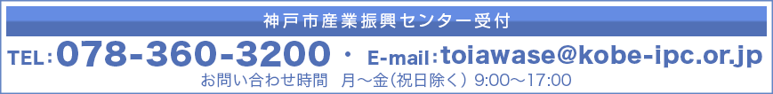

神戸市産業振興センター
|ご使用にあたってのご注意
（神戸市産業業振興センターの使用申込）
-
神戸市産業振興センター（以下、「当センター」という。）施設の使用申込は、お申込日から1年以内に限られます。
-
当センターでは、同一施設の8日間以上の連続使用はできません。
-
お申込みは、原則1日ごとに行ってください。1日に使用出来る施設数に制限はありません。
-
同じ施設を連続して7日以内でご使用される場合は、お申込みが可能です。ただし、7日以内の連続使用であっても、お申込日から１年を超える日のお申込みはできません。
＜例＞4月1日に使用申込をされた場合
連続使用を含め、翌年の3月31日までのお申込みが可能です。
（使用申込期限）
-
ハーバーホールについては、使用希望日より3か月前までに使用料のご入金が当センターで確認できる場合に、インターネットでのお申込みが可能です。
＜例＞ハーバーホールの使用を希望される場合
1月4日にお申込みされた場合、インターネットでは4月4日以降の使用申込が可能となります。インターネット予約ができない間の施設の使用を希望される方は、当センター受付にご相談ください。
-
会議室およびレセプションルームについては、使用希望日より14日前までに使用料のご入金が当センターで確認できる場合に、インターネットでのお申込みが可能です。
＜例＞会議室の使用を希望される場合
1月4日にお申込みされた場合、インターネットでは1月18日以降の使用申込が可能となります。インターネット予約が出来ない間の施設の使用を希望される方は、当センター受付にご相談ください。
（使用料について）
-
使用料については料金表をご確認ください。
-
使用者が、営利を目的として入場者から入場料・受講料等を徴収する場合の使用料金は、料金表に規定する額に150％を乗じた金額とします。
-
ハーバーホールを、練習、準備または撤去のために使用する場合の使用料金は、料金表に規定する額に50％を乗じた金額とします。
-
ハーバーホールを午前、午後又は夜間の時間を超えて使用する場合は、時間外使用料をお支払い頂きます。
-
ハーバーホールの使用時間に30分未満の端数があるときは、これを30分に切り上げて計算します。
（ハーバーホールについて）
-
ハーバーホールを使用される方は、使用日の約1ヶ月前にホールの設備担当者との打ち合わせがございます。使用日の約1ヶ月前までに、打ち合わせご希望日をご連絡ください。
-
ハーバーホールのご使用に際しては、原則として別途人件費の負担が必要となります。
人件費については、事前打合せの際に確認させて頂きます。また費用については、ホール管理者である神戸国際ステージサービス株式会社から請求いたします。
-
ピアノを使用される場合は、別途ピアノ調律代金ならびに、調律師の立会代金が必要となります。費用については、ピアノを管理している株式会社イハラ楽器から請求いたします。
-
ホール内は、飲食物の持ち込みを禁止しております。ご協力お願いいたします。
（レセプションルーム、会議室について）
-
レセプションルームは、パーティ・宴会以外でのご使用に際しては設営が必要です。自ら設営される場合を除き、別途設営・撤去費として、15,000円をレストラン「はぁとす」にお支払いいただきます。設営の必要がある場合は、レストラン「はぁとす」にお申し出ください。
-
レセプションルーム1001+1002、会議室802+803、902+903、904+905を使用される場合は、間仕切りを外しています。間仕切りが必要な場合は、その旨を当センター受付にお知らせください。
-
特別会議室は現在の6階から10階に移動します。それに伴い、定員が30名から24名となります。時期は未定ですが、平成28年度中には移動しますので、お申込みの際には当センター受付までお問い合わせください。
（展示場について）
-
展示場は、ひょうご産業活性化センターの平成28年度中の当センターへの移転に伴い、平成28年4月1日以降のお申込みはお受けすることができません。また、平成28年3月31日までのご使用については、インターネットによるお申込みは出来ません。お申込みの際は、当センター受付にお問い合わせください。
（使用時間の延長）
-
使用時間には準備及び片付けの時間も含まれます。
-
やむを得ず、使用時間の延長を希望される方は、当センター受付にその旨をご連絡ください。延長許可がおりましたら、その場で使用料をお支払いください。
-
レセプションルームを時間単位でご使用される場合は、インターネットでのご予約はできません。また時期は未定ですが、平成28年度中にはレセプションルームの時間使用は廃止されます。レセプションルームを時間使用でお申込みされる場合は、当センターにお問い合わせください。
（神戸市産業振興センター使用許可書について）
-
使用日当日は神戸市産業振興センター使用許可書をご持参ください。使用施設開閉の際に確認させて頂きます。そのため、プリントアウトした神戸市産業振興センター使用許可書（原本）をお持ちください。
（使用許可の取消）
-
使用許可が虚偽の申込みにより得られたものと判明した場合、当センターはその許可を取り消すことがあります。
（自己都合による取消及び使用料の返還）
-
使用者のご都合により使用許可を得た施設の使用を取り消される場合は、当センター受付にお越しいただき、「神戸市産業振興センター使用許可取消申出書」をご提出頂きます。なお、使用料の返還は下記のとおりとなります。
ハーバーホール
使用日の6ヶ月前までにお申し出があった場合は、7割返還いたします。
使用日の3ヶ月前までにお申し出があった場合は、3割返還いたします。
使用日の3ヶ月以内にお申し出があった場合には返還いたしません。
会議室及びレセプションルーム
使用日を含め、使用日からさかのぼり11日以前にお申し出があった場合は、全額返還いたします。
使用日を含め、使用日からさかのぼり10日以降にお申し出があった場合には返還いたしません。
＜例＞
| 施設区分 |
4月1日に使用する場合の取消申し出日 |
返還金 |
| ﾊｰﾊﾞｰﾎｰﾙ |
10月1日まで |
使用料の70% |
| 1月1日まで |
使用料の30% |
| 1月2日以降 |
返還いたしません |
ﾚｾﾌﾟｼｮﾝﾙｰﾑ
会議室 |
3月22日まで |
使用料の全額 |
| 3月23日以降 |
返還いたしません |
（使用許可の変更）
-
使用者のご都合により、使用日時又は使用施設を変更される場合は、ホールは使用日の3か月前までに、会議室・レセプションルームは使用日の10日前までに「神戸市産業振興センター使用許可変更申出書」が提出された場合のみ、1回限り変更を許可します。この場合、インターネットによる変更はできませんので、必ず当センター受付にお越しください。
（駐車場）
-
当センターには来館者用駐車場はございません。公共交通機関をご利用の上、お越しください。
（施設使用の禁止事項）
-
施設、設備、備品等を汚損または滅失する恐れがある場合
-
他人に危害を及ぼし、または迷惑となる行為をする恐れがある場合
-
管理運営上必要な指示に従わない場合
-
法令・条例規則等に違反した場合
-
暴力団の活動または暴力団の利益につながる恐れがある場合
（管理）
-
ご使用以外の施設に立ち入らないよう、お願いします。
-
避難経路の確認など、安全にはお気を付け下さい。
-
施設や備品を汚損、もしくは汚損する恐れのあることはおやめください。
-
他の使用者に迷惑となることはおやめください。
-
ご使用後は設備や器具、机の配置等を元に戻して退出してください。
-
ごみは原則としてお持ち帰りください。ただし、神戸市指定の事業系ゴミ袋を使用される場合に限り、当センターゴミステーションをご利用いただけます。神戸市指定の事業系ゴミ袋については、9階サービスステーションにてお買い求めいただけます。
-
当センターは全館禁煙です。ご協力お願いいたします。喫煙場所は、当センター南側・北側出入り口にございます。
-
使用施設外での広告物等の掲示、配布は禁止しています。
-
使用施設外での物品販売や勧誘等は禁止しています。
-
ご使用後は係員の点検を受けてください。
-
当センター10階のレストラン「はぁとす」では、お弁当やお飲み物の配達のほか、ランチや様々なパーティプランもご用意しております。是非ご利用ください。
「はぁとす」 TEL：078-360-4602 Email：order@heartoss.com
（損害賠償）
-
使用者が、故意または過失により施設及び備品等を損壊した場合、損害を賠償して頂く場合があります。
